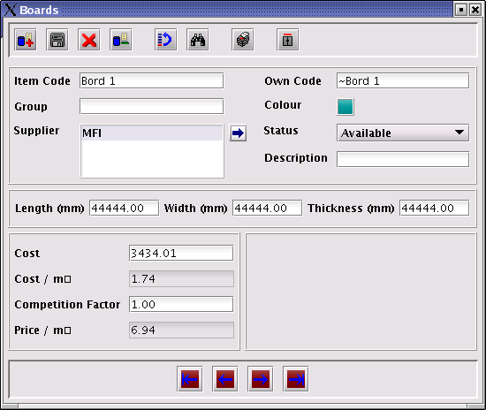
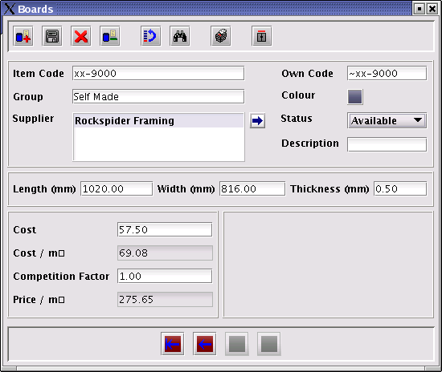
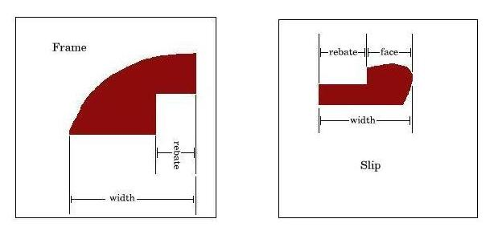
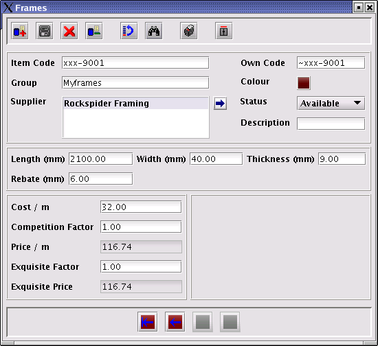

How to add new materials to RSF
How to add new Mount Boards, Glass and Backs
The method of adding mount boards, glass and backs
are exactly the same. This example will thus only explain how to add
a new mount board.
Navigate to Materials | Boards on the main
toolbar.
The following window will be displayed:

- Click on the
 button to add a new board. All the data entry fields will be
cleared.
button to add a new board. All the data entry fields will be
cleared.
In this example a mount board with the following attributes
will be added:
Item Code = xx-9000
Own Code = RSF will supply an own code if one
is not entered
Group = Self Made
Supplier = RockSpider Framing
Length = 1020mm
Width =
816mm
Thickness = 1mm
Cost = R57.50 per (1020mm X 816mm) unit
Enter the information as shown below and select the
appropriate colour.

- Click on the Save button (
 )
to save the information.
)
to save the information.
Repeat the process for each board that has to be added. When
finished, click on the
 button to close the window.
button to close the window.
How to add new frames and slips
The method of adding frames and slips are exactly the
same. This example will thus only explain how to add a new frame.
Terminology
Rebate: The part of the frame / slip that
overlaps the material item to the inside of the frame /slip.
Width: The distance between the innermost
and outermost edges of the frame or slip.

Navigate to Materials | Frames on the Main
toolbar.
Click on the
button to add a new frame. All the data entry fields will be
cleared.
In this example a frame with the following
attributes will be added:
Item Code =
xxx-9001
Own Code = RSF will supply
an own code if one is not entered
Group = Self Made
Supplier =
RockSpider Framing
Length = 2100mm
Width = 40mm
Thickness = 9mm
Cost = R32/m
Rebate = 6mm
Enter the information as shown below and select
the appropriate colour.

- Click on the Save button ()
to save the information.
Repeat the process for each frame that has to be added. When
finished, click on the
button to close the window.